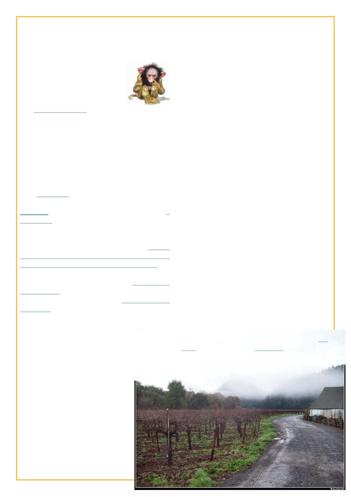

Twenty Years of LJ Idol
Season V
2008-09-22 – Some people have
been doing this LJ Idol thing for
four years already, and among the
194 participants this year is one
who introduces himself with
“I don’t believe in telling you who I am.
I am more interested in who you decide I am
after your own observation. In fact that
fascinates me.” though does go on to say he’s a
beekeeper hoping to work for the State
Department (not as a beekeeper) or if that fails
the Peace Corps. And in a rather prophetic
aside about LJ Idol “what in the name of
cthulhu is ‘the green room’?!”
The entries were often essays / opinion pieces
with occasional works of fiction. By week three
emo_snal was listed in Encyclopedia Dramatica as a
sockpuppet (a fake identity) belonging to someone
I’d never heard of, off to a great start!
Gradually insights into our protagonist’s life
did begin to appear, however, such as moving
truckloads of hives to the almonds on cold winter
nights and getting 130+ bee stings in the process.
2008-12-26 - And then there was the “Green Room
Holiday Party“ I hosted not realizing that taking the
green room’s name in vain is severe LJ Idol
blasphemy and I almost got officially burned at the
stake for my heretical ways.
2009-02-22 - It’s one, and
the polls close in two hours. I have
68 votes, I need 71 to stay in. I’m
nestled on the couch with
gratefuladdict, while it rains
outside.
“I should go” I say. I have a long drive
ahead of me.
It’s one thirty. I still need three votes. I
could post a link to the polls a second time, or
post to emosnail for the first time, but I don’t. “I
should go” I say
It’s two. I still need three votes. I could
surely call three people I know with LJs who
probably haven’t voted yet, but I don’t. “I
should go”
It’s three. The polls should be closed,
but I haven’t looked at them in an hour or so. “I
should go” I say, and finally manage to make it
out to my car.
I find my car a box full of rain.
Apparently I forgot to close the skylight. Even
after closing it, it is still raining in my car. The
ceiling continues to drip. The seats, everything
is soaked. I didn’t really want to leave today
anyway. So I rejoin my favourite person I’ve
met in LJ Idol on the couch.
But of course, in another sense, I am indeed to
leave today.
LJ Idol began with “saying goodbye,”
but it doesn’t end with it. In the end, for me, it’s
about “getting involved.”
Two months later we broke up, it was friendly and
mutual (“how are we going to tell all our friends?”
her:“we could throw a green room party” me:“can we
have pinatas?” her:“only if they’re life-sized replicas
of each other” me: “ I’m not sure we’ve built up
enough anger and resentment for pinatas. We’d need
a few more weeks of distrust, suspicions, and
sleeping around with the intern”), and her
entry about it was better than mine. We both went
on to live happily ever after, separately.
And then anonymity was completely thrown
to the wind when in New Years I drove up to northern
California to hang out with fellow LJ Idolist
gratefuladdict and several of her friends who were
also in it. We either at that time or shortly
thereafter commenced dating
 LiveJournal
LiveJournal Dreamwidth
Dreamwidth